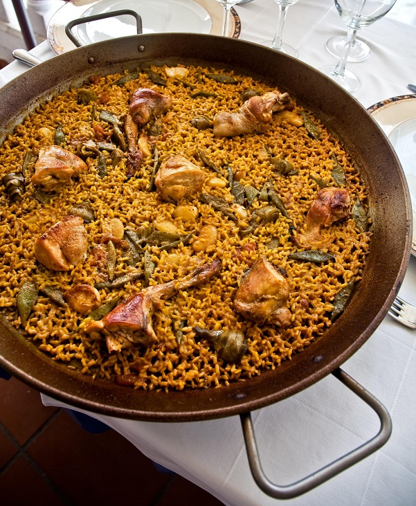

Paella

Description
Paella Valenciana is a traditional Spanish dish originating from the region of Valencia. This iconic one-pot wonder is a symphony of flavors, colors, and textures. Picture a golden saffron-infused rice, studded with an enticing medley of tender chicken, succulent seafood, and aromatic vegetables. The combination of Spanish chorizo, bell peppers, onions, garlic, and a touch of smoky paprika creates a rich and savory base. The star ingredient, bomba or Calasparra rice, absorbs the flavorful broth, resulting in a heavenly rice dish with a delightful socarrat (a delicious caramelized crust) on the bottom. Paella Valenciana is a true celebration of Spanish cuisine, perfect for gatherings, festive occasions, or when you simply crave a taste of authentic Mediterranean flavors.
Ingredients
- 2 cups bomba or Calasparra rice
- 4 cups chicken broth
- 1 lb chicken thighs, bone-in and skin-on
- 1 lb assorted seafood (such as shrimp, mussels, and clams)
- 1 Spanish chorizo sausage, sliced
- 1 onion, diced
- 1 red bell pepper, diced
- 4 cloves garlic, minced
- 1 teaspoon smoked paprika
- A pinch of saffron threads
- 1 cup green beans, trimmed and halved
- 1 cup peas (fresh or frozen)
- 1 lemon, cut into wedges
- Fresh parsley, chopped (for garnish)
- Olive oil
- Salt and pepper to taste
- In a paella pan or large skillet, heat olive oil over medium heat. Add the chicken thighs and cook until browned on both sides. Remove the chicken from the pan and set aside.
- In the same pan, add the chorizo and sauté until it releases its oils and becomes slightly crispy. Remove the chorizo and set aside.
- Add diced onions, red bell pepper, and minced garlic to the pan. Sauté until they soften and become aromatic.
- Stir in the smoked paprika and saffron threads, coating the vegetables with the spices.
- Add the rice to the pan, stirring well to coat it with the flavorful mixture.
- Pour in the chicken broth and bring it to a simmer. Season with salt and pepper to taste.
- Arrange the chicken thighs, chorizo, green beans, and peas on top of the rice. Gently press them down into the broth.
- Cover the pan and simmer on low heat for about 20 minutes or until the rice is cooked and the liquid has been absorbed. Avoid stirring the rice during this time.
- Once the rice is cooked, remove the pan from heat and cover it with a clean kitchen towel. Let it rest for 5 minutes to allow the flavors to meld and the socarrat to form.
- Garnish with fresh parsley and serve the Paella Valenciana with lemon wedges on the side for squeezing over the dish. Enjoy!
Return to top
Return to main page